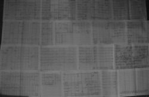
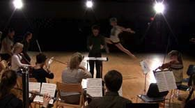
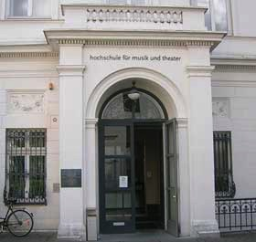
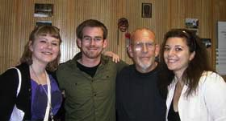

Nov. 20, 2013: Voi(rex) by Philippe Leroux, Smoke and Mirrors by Christopher Chandler
the [Switch~ Ensemble] – Jason Thorpe Buchanan, conductor. ECMC Concert with guest Philippe Leroux – Rochester, NY
(poster)
2013
Mar. 31, 2014: 2014 ASCAP Morton Gould Young Composer Award for Asymptotic Flux: Second Study in Entropy.
New Music Box Article here.
Sep. 26, 2014: Announced winner of the 5-hour International Iron Composer Composition Competition in Cleveland, OH, with a prize of $1,000 and commission for the Blue Water Chamber Orchestra. World premiere of oggetti 2.b for low string trio, live radio broadcast in Cleveland, OH. www.ironcomposer.org
Sep. 19, 2014: Appointed Coordinator of the Valencia International Performance Academy & Festival in Spain.
Sep. 6, 2014: Selections from Six Shelley Songs** Sirje Aleksandra Viise, soprano & Davorin Mori, piano Berlin, DE.
Sep. 19, 2014: Appointed Coordinator of the Valencia International Performance Academy & Festival in Spain.
Sep. 6, 2014: Selections from Six Shelley Songs** Sirje Aleksandra Viise, soprano & Davorin Mori, piano Berlin, DE.
Jun. 13, 2014: Artist in Residence USF Verftet, Bergen City Council, Norway
Jun. 02, 2014: Asymptotic Flux: First Study in Entropy, Smoke and Mirrors by Christopher Chandler, the [Switch~ Ensemble] – Jason Thorpe Buchanan, conductor NYC Electroacoustic Music Festival – New York, NY
Jun. 02, 2014: Asymptotic Flux: First Study in Entropy, Smoke and Mirrors by Christopher Chandler, the [Switch~ Ensemble] – Jason Thorpe Buchanan, conductor NYC Electroacoustic Music Festival – New York, NY
Jul. 10, 2014: World premiere of antistasis, Ensemble Nikel, Tzlil Meudcan International New Music Festival – Tel Aviv, Israel
Jun. 25, 2014: World premiere of oggetti I (Omaggio a Sciarrino), Fiati 5 Wind Quintet at Chamber Music Campania as composer-in-residence. Lucera, Italy.
Apr. 14, 2014: TsTs by Bryan Jacobs
the [Switch~ Ensemble] – Jason Thorpe Buchanan, conductor
ECMC Concert – Rochester, NY
Mar. 21, 2014: Double Concerto for Two Horns and Chamber Orchestra, Eastman Musica Nova Ensemble – Brad Lubman, conductor
Jeff Nelsen & Michael Walker, horn soloists
Eastman Musica Nova plays Zorn, Morris, Thorpe Buchanan – Rochester, NY
Mar. 17, 2014: Thrilled to announce a collaboration between myself and critically acclaimed writer Darcie Dennigan, poet-in-residence at the University of Connecticut, on our multimedia opera based upon Knut Hamsun's Sult.
Jan. 23, 2014: Selected to write new works for Contemporary Opera Workshop at the Internationales Musikinstitut Darmstadt (August 2014)
Tzlil Meudcan International Music Festival in Tel Aviv, Israel with Ensemble Nikel (July 2014)
Fiati 5 Wind Quintet at Chamber Music Campania in Italy (June 2014) as composer-in-residence.
Mar. 17, 2014: Thrilled to announce a collaboration between myself and critically acclaimed writer Darcie Dennigan, poet-in-residence at the University of Connecticut, on our multimedia opera based upon Knut Hamsun's Sult.
Jan. 23, 2014: Selected to write new works for Contemporary Opera Workshop at the Internationales Musikinstitut Darmstadt (August 2014)
Tzlil Meudcan International Music Festival in Tel Aviv, Israel with Ensemble Nikel (July 2014)
Fiati 5 Wind Quintet at Chamber Music Campania in Italy (June 2014) as composer-in-residence.
Dec. 26, 2013: Music for Four Saxophones: One (In Stasis)
Northwest Wind Symphony, Dan Schmidt, conductor – Centralia, WA
Oct. 04, 2013: …durat(A)ions: "broken landscape", for Iktus Percussion at the Eastman School of Music. Rochester, NY.
(poster)


09.10.13: Commission from Meir Rimon Commissioning Assistance Program of the International Horn Society to begin writing my Double Concerto for horn soloists Jeff Nelsen, Michael Walker and the Eastman Musica Nova Ensemble with conductor Brad Lubman.
09.09.13: Winner of the 4th Annual newEar Composers' Competition.


09.10.13: Commission from Meir Rimon Commissioning Assistance Program of the International Horn Society to begin writing my Double Concerto for horn soloists Jeff Nelsen, Michael Walker and the Eastman Musica Nova Ensemble with conductor Brad Lubman.
09.09.13: Winner of the 4th Annual newEar Composers' Competition.
Jul. 27, 2013: Asymptotic Flux: Second Study in Entropy (Static Foxy Lump [II:] Second Nudist Tyre Pony), Alarm Will Sound – Alan Pierson, conductor
Columbia, MO.
July 7, 2013:
Asymptotic Flux: First Study in Entropy
Ensemble Linea – Jean-Philippe Wurtz, conductor
June in Buffalo – Buffalo, NY
Jul. 3, 2013: Excerpted from NewMusicBox: "Asymptotic Flux: First Study in Entropy by Jason Thorpe Buchanan is an unearthly collage of sounds. Though conceptually direct, the [result was] delightfully ambiguous: frantic joy could be as easily heard as extreme distemperment." www.newmusicbox.org/articles/2013-june-in-buffalo/
Apr. 8, 2013: Märchenbilder by Hans Abrahamsen Eastman Musica Nova Ensemble – Jason Thorpe Buchanan, conductor with guest Hans Abrahamsen Eastman School of Music – Rochester, NY.
Mar. 29, 2013:UR by Magnus Lindberg
the [Switch~ Ensemble], Jason Thorpe Buchanan, conductor
Ossia New Music Concert – Rochester, NY
Mar. 21, 2013:
Delusive Proximity by Stylianos Dimou
Stillhunting* by Daniel Kohane
Eastman Graduate Composers' Sinfonietta, Jason Thorpe Buchanan, conductor
Rochester, NY
Mar. 13, 2013: Asymptotic Flux: Second Study in Entropy (Static Foxy Lump: [II] Second Nudist Tyre Pony, written for Alarm Will Sound, will be premiered at the Mizzou International Composers Festival in Columbia, MO July 2013

First Study for Alto Saxophone: doublethink
Diane Hunger, saxophone
Rest is Noise Concert – Rochester, NY
Apr. 21, 2012:
The Gods of Pegana by Jason Thorpe Buchanan
Midnight Swim by Jennifer Bellor
I am a drop of rain on your window by Weijun Chen
Sound ExChange Orchestra – Jason Thorpe Buchanan, conductor
in collaboration with the University of Rochester Dance Dept.
Rochester, NY
Apr. 17, 2012:
First Study for Piano & Electronics: absence*
in collaboration with painter Anna Schuleit
Daniel Pesca, piano & Jason Thorpe Buchanan, electronics
Benson Creative Forum, Eastman School of Music – Rochester, NY
Mar. 15, 2012:
First Study for Alto Saxophone: doublethink, Michael Rene Torres, saxophone, North American Saxophone Alliance Conference. Tempe, AZ.
Jul. 3, 2013: Excerpted from NewMusicBox: "Asymptotic Flux: First Study in Entropy by Jason Thorpe Buchanan is an unearthly collage of sounds. Though conceptually direct, the [result was] delightfully ambiguous: frantic joy could be as easily heard as extreme distemperment." www.newmusicbox.org/articles/2013-june-in-buffalo/
Apr. 8, 2013: Märchenbilder by Hans Abrahamsen Eastman Musica Nova Ensemble – Jason Thorpe Buchanan, conductor with guest Hans Abrahamsen Eastman School of Music – Rochester, NY.
Mar. 29, 2013:
Mar. 21, 2013:
Mar. 13, 2013: Asymptotic Flux: Second Study in Entropy (Static Foxy Lump: [II] Second Nudist Tyre Pony, written for Alarm Will Sound, will be premiered at the Mizzou International Composers Festival in Columbia, MO July 2013

2012
Dec. 07, 2012: Asymptotic Flux: First Study in Entropy - [VIDEO]
ensemble39
Melos Music Concert – Philadelphia, PA
(poster) (event info)
Nov. 19, 2012: Cronica de una vuelta* by Theocharis Papatrechas - [VIDEO] Octamerism* by Nathan Stang Eastman Graduate Composers' Sinfonietta – Jason Thorpe Buchanan, conductor Rochester, NY (poster)
Nov. 12, 2012: Asymptotic Flux: First Study in Entropy Amok Koma by Fausto Romitelli (conductor) Liebes Lied** by Sascha Lino Lemke (electronics) the [Switch~ Ensemble] – Jason Thorpe Buchanan, conductor ECMC Concert – Rochester, NY (poster)
Oct. 25, 2012: First Study for Alto Saxophone: doublethink** Allison Balcetis New Music at The Bohemia – Edmonton, Alberta
Oct. 04, 2012: Asymptotic Flux: First Study in Entropy, Amok Koma by Fausto Romitelli (conductor) the [Switch~ Ensemble] – Jason Thorpe Buchanan, conductor Ossia New Music Concert – Rochester, NY (poster)


July 2012: Internationales Musikinstitut Darmstadt June 2012: ManiFeste Analytical Courses with Robert Hasegawa.
Nov. 19, 2012: Cronica de una vuelta* by Theocharis Papatrechas - [VIDEO] Octamerism* by Nathan Stang Eastman Graduate Composers' Sinfonietta – Jason Thorpe Buchanan, conductor Rochester, NY (poster)
Nov. 12, 2012: Asymptotic Flux: First Study in Entropy Amok Koma by Fausto Romitelli (conductor) Liebes Lied** by Sascha Lino Lemke (electronics) the [Switch~ Ensemble] – Jason Thorpe Buchanan, conductor ECMC Concert – Rochester, NY (poster)
Oct. 25, 2012: First Study for Alto Saxophone: doublethink** Allison Balcetis New Music at The Bohemia – Edmonton, Alberta
Oct. 04, 2012: Asymptotic Flux: First Study in Entropy, Amok Koma by Fausto Romitelli (conductor) the [Switch~ Ensemble] – Jason Thorpe Buchanan, conductor Ossia New Music Concert – Rochester, NY (poster)


July 2012: Internationales Musikinstitut Darmstadt June 2012: ManiFeste Analytical Courses with Robert Hasegawa.
May. 7, 2012:
Apr. 21, 2012:
Apr. 17, 2012:
Mar. 15, 2012:
Nov. 2011:
Garden Rain by Toru Takemitsu
OSSIA New Music Ensemble – Jason Thorpe Buchanan, conductor
OSSIA Concert – Rochester, NY
Oct.13, 2011:
Berlin Songs by Jason Thorpe Buchanan
The Resonance After by Christopher Chandler,
Eastman Musicians – Jason Thorpe Buchanan, conductor
Eastman Composers' Forum. Rochester, NY.
Aug. 19, 2011:
Berlin Songs** by Jason Thorpe Buchanan - [VIDEO]
Butterflies & Dragons* by Daniel Temkin
Wanderer Moon by Tonia Ko
Melos Music & Nonsemble6 – Jason Thorpe Buchanan, conductor
Melos New Music Concert – San Francisco, CA
(poster) (event info)
Aug. 12, 2011:
Karttikeya (Study No. 1)
Anna Kijanowska, piano
Yong Siew Toh Conservatory of Music – Singapore
Aug. 12, 2011:
Karttikeya (Study No. 1)**
Anna Kijanowska, piano
LaSalle School of Contemporary Music – Singapore
Aug. 12, 2011:
Karttikeya (Study No. 1)**
Anna Kijanowska, piano
Consulate General of the Republic of Poland – Sydney, Australia
Mar. 22, 2011:
Berlin Songs*
Fulbright Musicians – Thomas Heuser, conductor
Fulbright Pan-European Conference & Gala Concert
Akademie der Künste – Berlin, Germany


Oct.13, 2011:
Aug. 19, 2011:
Aug. 12, 2011:
Aug. 12, 2011:
Aug. 12, 2011:
Mar. 22, 2011:
2011
Aug.03.2010:
The Gods of Pegana
Brevard Music Center Orchestra – Ken Lam, conductor
Reading Session – Brevard, NC
Jul.22.2010: Of Roon Michael Rene Torres, alto saxophone; Maggie Thompson, cello; Daniel Temkin, percussion; Alana Murphy, piano ITCH Ensemble, Brevard Music Center – Brevard, NC
Jun.04.2010: Six Shelley Songs Laura Kachurek, soprano Melos New Music Concert – Chicago, IL (poster) (event info)
Mar.22.2010: Fanfare for Brass & Percussion by Chin Ting Chan. Jason Thorpe Buchanan, conductor UNLV Brass Ensemble – Las Vegas, NV
Jul.22.2010: Of Roon Michael Rene Torres, alto saxophone; Maggie Thompson, cello; Daniel Temkin, percussion; Alana Murphy, piano ITCH Ensemble, Brevard Music Center – Brevard, NC
Jun.04.2010: Six Shelley Songs Laura Kachurek, soprano Melos New Music Concert – Chicago, IL (poster) (event info)
Mar.22.2010: Fanfare for Brass & Percussion by Chin Ting Chan. Jason Thorpe Buchanan, conductor UNLV Brass Ensemble – Las Vegas, NV
(2008-2010)
Nov.03.2009
The Gods of Pegana (Nonet version)
Nextet – Virko Baley, conductor
Las Vegas, NV
(poster)
Aug.06.2009: Music for Four Saxophones: One (In Stasis)* Brevard Music Center, ITCH New Music Concert – Brevard, NC
Aug.02.2009: Orchestral Sketch No. 1 Brevard Music Center Orchestra, Ken Lam, conductor Reading Session – Brevard, NC
Jun.11.2009: A Zarzuela & Other Lost Works* Tad Wind Symphony – Tokyo, Japan
May.01.2009: Vasava (Lord of the Spheres)* UNLV Brass Ensemble – Jason Thorpe Buchanan, conductor Las Vegas, NV
Apr.08.2009: Songs of Moonlight & Shadows N.E.O.N. Music Festival – Las Vegas, NV
Aug.06.2009: Music for Four Saxophones: One (In Stasis)* Brevard Music Center, ITCH New Music Concert – Brevard, NC
Aug.02.2009: Orchestral Sketch No. 1 Brevard Music Center Orchestra, Ken Lam, conductor Reading Session – Brevard, NC
Jun.11.2009: A Zarzuela & Other Lost Works* Tad Wind Symphony – Tokyo, Japan
May.01.2009: Vasava (Lord of the Spheres)* UNLV Brass Ensemble – Jason Thorpe Buchanan, conductor Las Vegas, NV
Apr.08.2009: Songs of Moonlight & Shadows N.E.O.N. Music Festival – Las Vegas, NV
Feb.04.2009:
Five Bagatelles for Horn & Marimba
Ryan Simm & Bryce Nakaoka – Las Vegas, NV
Nov. 13, 2008: Six Shelley Songs Nicole Yazolino, soprano – Cincinnati, OH
Apr. 20, 2008: Michael Walker, horn - Senior Recital. World premiere of Three Observations for Horn and Electronics. San Jose, CA.
Nov. 13, 2008: Six Shelley Songs Nicole Yazolino, soprano – Cincinnati, OH
Apr. 20, 2008: Michael Walker, horn - Senior Recital. World premiere of Three Observations for Horn and Electronics. San Jose, CA.




Aug. 2010 to July 2011: Fulbright Fellowship, Hochschule für Musik und Theatre, Hamburg. Studies with Peter Michael Hamel, Manfred Stahnke, Georg Hajdu, and Sascha Lino-Lemke.


Mar.11, 2009:
Karttikeya (Study No. 1),
Cristina Valdes, piano. Winner of University of Nevada, Las Vegas Piano Compostition Competition. Las Vegas, NV.
Aug. 15, 2014: Hunger, (Part III, Sc. 1), Workshop Performance. Ensemble Interface, Contemporary Opera Workshop – Internationales Musikinstitut Darmstadt, Germany
Apr. 18, 2014: 2014 Howard Hanson Orchestral Prize, Eastman School of Music, for Asymptotic Flux: Second Study in Entropy.
Apr.18.2014: First Study for Alto Saxophone: doublethink, Michel Bianchini, saxophone, East(a)lia, Eastman School of Music – Rochester, NY
Apr.18.2014: First Study for Alto Saxophone: doublethink, Michel Bianchini, saxophone, East(a)lia, Eastman School of Music – Rochester, NY
Dec. 9, 2014: Hunger has been selected for The Industry's Los Angeles "FIRST TAKE" West Coast Workshop for New Operas with wild Up. A public performance of Part III will take place on February 21, 2015 at the Wallis Annenberg Center for the Performing Arts, Beverly Hills, CA in the 400-seat Goldsmith Theater.
Dec. 9, 2014: the [Switch~ Ensemble] has been selected to present Part III of Hunger on the MATA Interval 8 Series in New York City, May 2015 alongside works of Wojtek Blecharz, Chris Chandler, Stylianos Dimou, Stefan Prins, and Zach Sheets in a concert of New Works for Ensemble & Multimedia curated by artistic director Jason Thorpe Buchanan.
Dec. 1, 2014: Our official collaborator for a 2016/17 production of Hunger is Ensemble Interface (Germany).
Dec. 9, 2014: the [Switch~ Ensemble] has been selected to present Part III of Hunger on the MATA Interval 8 Series in New York City, May 2015 alongside works of Wojtek Blecharz, Chris Chandler, Stylianos Dimou, Stefan Prins, and Zach Sheets in a concert of New Works for Ensemble & Multimedia curated by artistic director Jason Thorpe Buchanan.
Dec. 1, 2014: Our official collaborator for a 2016/17 production of Hunger is Ensemble Interface (Germany).
2014
Oct. 21, 2014: Nominated for the 2015 Gaudeamus Prize, my works will be presented by Ensemble Insomnio, New European Ensemble, and Slagwerk Den Haag at Gaudeamus Muziekweek in September 2015. www.muziekweek.nl
Oct. 12, 2014: Selections from Six Shelley Songs Sirje Aleksandra Viise, soprano & Davorin Mori, piano Klangenfurt, Austria.
Oct. 10, 2014: Selections from Six Shelley Songs** Sirje Aleksandra Viise, soprano & Davorin Mori, piano Dravograd, Slovenia.
Oct. 12, 2014: Selections from Six Shelley Songs Sirje Aleksandra Viise, soprano & Davorin Mori, piano Klangenfurt, Austria.
Oct. 10, 2014: Selections from Six Shelley Songs** Sirje Aleksandra Viise, soprano & Davorin Mori, piano Dravograd, Slovenia.